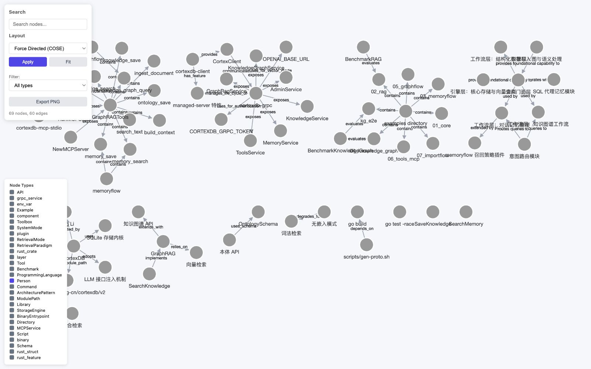
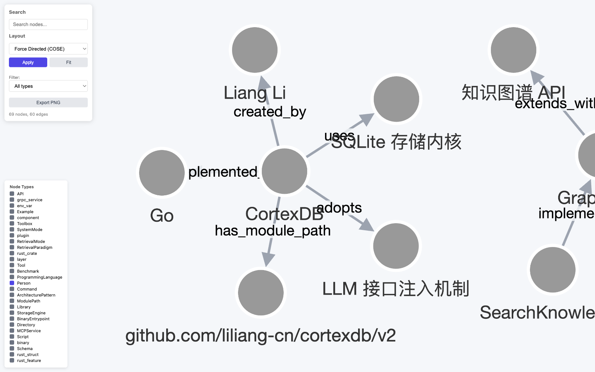

One SQLite file holds vectors, search, RAG, agent memory, and a SPARQL knowledge graph — with MCP tools and a Rust-ready gRPC sidecar.
Built around CortexDB, MemoryFlow, GraphFlow, embedded KG, and MCP tools
Primary DB facade for vectors, FTS5, knowledge, memory, KnowledgeMemory recall, knowledge graph APIs, toolbox, and MCP.
Agent memory workflow for transcript ingest, recall, wake-up layers, diary, transcript reconstruction, and promotion.
Corpus-to-graph workflow with extraction schema, build, analysis, report, JSON export, and HTML visualization.
Import external structured data (CSV, MySQL/PostgreSQL dumps) into RAG and knowledge-graph foundations in one pass, with optional AI-assisted mapping, triple extraction, and text refinement.
RDF triples/quads, namespaces, import/export, SPARQL practical subset, RDFS-lite, and SHACL-lite.
In-process tool calls through db.GraphRAGTools(), plus MCP server exposure for external agents.
cortexdb-grpc serves the full facade over gRPC with bearer-token auth; the cortexdb-client crate on crates.io gives Rust typed access and can auto-spawn the sidecar.
High-level SaveMemory, SearchMemory, KnowledgeMemory.Recall, reflection, and context pack APIs for agent workflows.
Use lexical retrieval plus LLM-planned keywords, alternate queries, entity names, retrieval mode, or optional lexical semantic-router tool selection.
Modular Go packages for cortexdb, memoryflow, graphflow, importflow, embedded KG, storage, and tools
Primary DB API for vectors, lexical search, knowledge, memory, KnowledgeMemory, KG, tools, and MCP.
Transcript ingest, recall, wake-up layers, diary, optional Hindsight strategy, and promotion.
Corpus-to-graph extraction schema, build, analysis, report, JSON export, and HTML visualization.
Source adapters (CSV, MySQL/PG dump) → MappingPlan → dual RAG + KG sinks, with pluggable AI MappingInferer, TextRefiner, and graphflow triple extraction.
Low-level property graph, RDF triples/quads, SPARQL, RDFS-lite inference, and SHACL-lite validation.
SQLite storage, embeddings, collections, FTS5, vector indexes, chat, and session primitives.
GraphRAG toolbox, knowledge graph tools, KnowledgeMemory tools, memory tools, and MCP server integration.
cortexdb.v1 proto contract, pkg/rpcserver conversion layer, cmd/cortexdb-grpc binary with token auth and OpenAI-compatible embedder config.
SQL-backed agent memory with zero embedder requirement: typed memories, banks, mental models, FTS5 trigram ranking with importance and time decay.
package main
import (
"context"
"github.com/liliang-cn/cortexdb/v2/pkg/cortexdb"
"github.com/liliang-cn/cortexdb/v2/pkg/graph"
)
func main() {
db, err := cortexdb.Open(cortexdb.DefaultConfig("KnowledgeMemory.db"))
if err != nil {
panic(err)
}
defer db.Close()
ctx := context.Background()
_, _ = db.UpsertKnowledgeGraph(ctx, cortexdb.KnowledgeGraphUpsertRequest{
Triples: []cortexdb.KnowledgeGraphTriple{
{Subject: graph.NewIRI("https://example.com/alice"), Predicate: graph.NewIRI(graph.RDFType), Object: graph.NewIRI("https://example.com/Person")},
},
})
_, _ = db.QueryKnowledgeGraph(ctx, cortexdb.KnowledgeGraphQueryRequest{
Query: `SELECT ?o WHERE { <https://example.com/alice> ?p ?o . }`,
})
}One markdown overview of this project, fed through graphflow with an LLM extractor — out comes a queryable knowledge graph: 69 nodes, 74 edges, answers included.


# build the graph of this very project (any OpenAI-compatible LLM works)
go run ./examples/08_self_knowledge_graph
# then ask it questions — answers are graph traversals, fully deterministic
go test ./examples/08_self_knowledge_graph -vGet started quickly with our comprehensive example applications
Durable knowledge storage and lexical GraphRAG retrieval without requiring an embedder.
View ExampleTranscript ingest, wake-up layers, diary entries, recall, and transcript reconstruction.
View ExampleRDF triples, SPARQL property paths and subqueries, incremental RDFS, and SHACL-lite.
View ExampleCorpus-to-graph extraction, build, analysis, report, JSON export, and HTML visualization.
View ExampleImport a CSV or SQL dump into RAG + knowledge graph: Source parsing, MappingPlan routing, and Plan/Run/AutoImport with optional AI inference.
View ExampleThe demo above: turn this project's docs into a queryable knowledge graph via graphflow + any LLM, then answer questions from graph edges.
View ExampleTyped cortexdb-client crate: save/search knowledge, memory, SPARQL, and tools from Rust; managed-server feature auto-spawns the sidecar.
View ExampleSingle-file storage, practical reasoning, and workflow APIs
CortexDB is a pure-Go, single-file AI memory and knowledge graph library. One SQLite file (via modernc.org/sqlite, no CGO) holds vectors, FTS5 full-text search, RAG knowledge, scoped agent memory, and an RDF knowledge graph with SPARQL, RDFS-lite inference, and SHACL-lite validation.
No. CortexDB never imports an LLM SDK. Without an embedder it falls back to first-class lexical retrieval; plugging any embedding endpoint (OpenAI-compatible, e.g. Ollama) enables vector and hybrid search. All LLM-dependent features are optional interfaces.
Yes. The cortexdb-grpc sidecar serves the full API over gRPC with bearer-token auth, and the cortexdb-client crate on crates.io provides typed Rust access. Its managed-server feature can download and spawn the sidecar automatically. Any language with gRPC support can use the same cortexdb.v1 protocol.
RDF triples and quads with namespaces, a practical SPARQL subset (SELECT, ASK, property paths, subqueries, updates), RDFS-lite incremental inference with explanations, SHACL-lite shape validation, and Turtle/N-Triples/N-Quads/TriG import and export.
Yes. CortexDB is open source under the MIT license. The Go library, the gRPC sidecar, the Rust client crate, and all examples are free to use, including commercially.
Join the developers building the next generation of AI applications with CortexDB